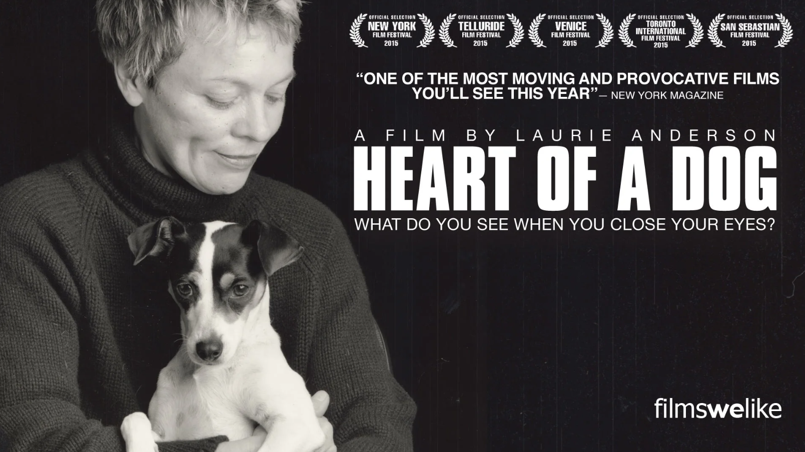

The Chalkroom, Laurie Anderson (2017)
The Chalkroom, Laurie Anderson (2017)
The Chalkroom, Laurie Anderson (2017)
The Chalkroom, Laurie Anderson (2017)
Album "Big Science", Laurie Anderson (1982)
 Four Talks, Laurie Anderson (2021)
Four Talks, Laurie Anderson (2021)
"O Superman" (Track 6)
 Moby Dick - Laurie Anderson (1999)
Moby Dick - Laurie Anderson (1999)

Heart of a Dog, Laurie Anderson (2015)Haz clic en el botón para ver una curiosidad de Laurie Anderson.
Si se le hace incomodo, haga click.